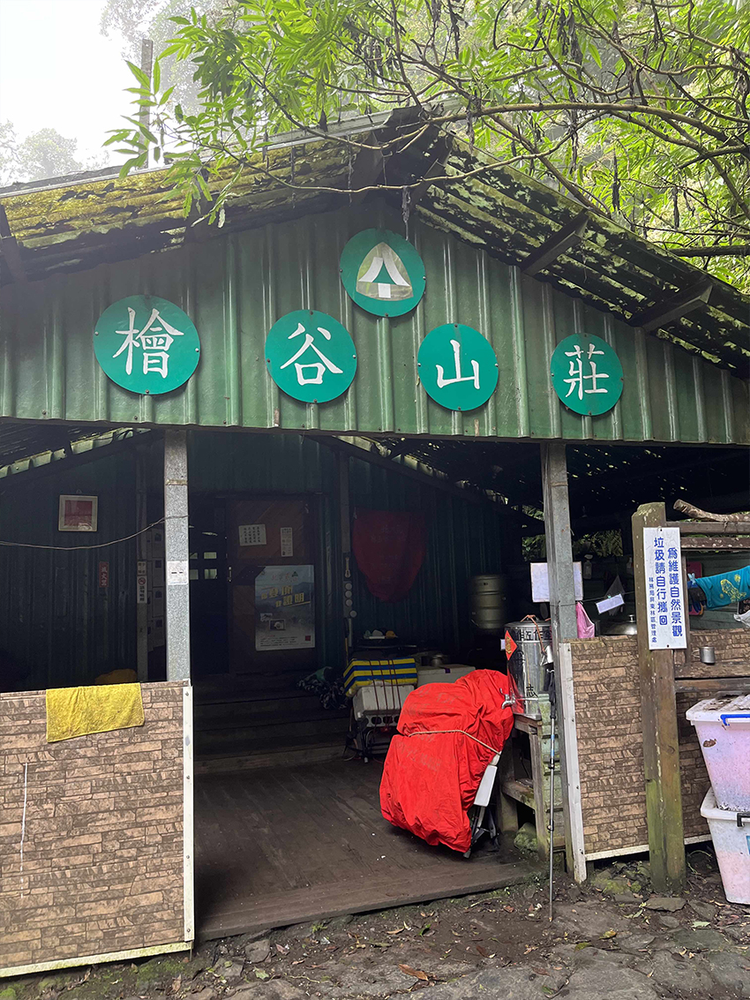

屏東的最高峰，北大武山，是排灣族、魯凱族與卑南族的聖山。今年目標之一，希望能見到雲海美景，努力的訓練自己，讓自己別漏氣，目標設定在北大武的喜多麗斷崖。在這斷崖上，若天氣好的話，能看到一片的雲海，為此目標，身為爬山新手，開始搜集相關資料，需要準備什麼。也為我在旅行日記上，記錄我的足跡。
經查詢網路資訊，需要有幾個方向來做準備。
1. 需要走多遠？依據一般腳程約四小時可以到喜多麗，來回為八小時。山路來回約為13.4公里。
2. 需要帶什麼？準備水、糧食、雨衣、登山杖等等。
3. 需要入山登記。前往 https://nv2.npa.gov.tw/NM107-604Client/ 登錄登山者的個人資料。
4. 下載離線地圖。
5. 需要體力訓練。
依據所需的方向來準備，開始計劃這項目標。在體力訓練上，設定三個小目標。
1. 減重5公斤，採取168飲食法，8小時進食，16小時不進食。
2. 讓體力提升，每日步行一萬五千步或跑步7公里。
3. 假日爬山，讓自己習慣爬山的步調，儘可能拉長山路的公里數，以七星山為主要訓練場所。
經三個月努力，達成三項預設目標，我想，可以準備來挑戰北大武山之喜多麗斷崖。
在九月的某一個假日，出發前往北大武，首先會到大武山之門，看到原住民的圖騰，感受到原住民對於山的敬畏，拍下第一張大武山的照片。此時時間為清晨五點半。
 |
| 大武山之門 |
再往前走，約10分鐘，抵達新登山口。整裝準備後，6：00整開始爬。很幸運的，剛開始走的半小時，就看到雲海美景。拍下這照片，非常感動，滿足在2022年初所下的目標之一。
| 雲海 |
當下的我看到此景色，非常感動，置身在天堂般的美景，讓我更有動力繼續往前走。爬了一小時，來到舊登山口，填寫相關資料，記錄接下來往喜多麗斷崖的路線。
| 北大武路線圖 |
北大武的路線，爬上爬下的走了三小時，才來到喜多麗斷崖，但我已經氣喘吁吁，需要休息一番。很可惜當天水氣非常多，霧茫茫一片，俗稱白牆，看不到雲海美景，不免失望，但對我自己的挑戰，算是完成一項小成就。非常高興是自我挑戰成功，對自己說，我做到了。
| 喜多麗斷崖 |
到喜多麗斷崖，時間來到10點，再往前走兩百公尺，來到檜木山莊，補充熱量與休息，讓自己有體力能順利回程。而檜谷山莊主要是提供登山者休息與住宿。若要攻頂的登山客，可以在此住宿一晚。山莊有提供住宿、水源與廁所。落實垃圾不落地，需要把垃圾帶到山下，以免動物誤食。
|  |
| 檜谷山莊 |
在回程的路上，天氣越來越陰暗，外加水氣越來越多，霧氣圍繞著山中，在山路上，另有一番天地。在途中，遇到幾個單攻北大武山的登山者，讓新手的我，也能如他們一樣挑戰成功。
| 霧中北大武 |
回到停車場，已經是下午三點。對於這次的自我挑戰，讓我印象難忘，為了雲海，可以計畫出每一個項目，需要如何去執行與完成。當中學習到，目標設定與實踐，是在每一個執行上去修正與實際去實踐。我很高興能夠挑戰成功，留下的副作用是不斷地發抖的雙腳與疲憊。帶著滿心歡喜的心情，去設定下一個目標。這趟旅程值得記錄在我人生旅途日記中。